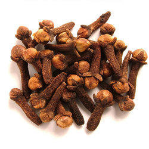
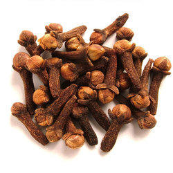

saraswati speices
CINNAMON
 

Cloves are the aromatic flower buds of a tree in the family Myrtaceae, Syzygium aromaticum.
They are native to the Maluku Islands (or Moluccas) in Indonesia, and are commonly used as a spice.
Cloves are available throughout the year owing to different harvest seasons in different countries.